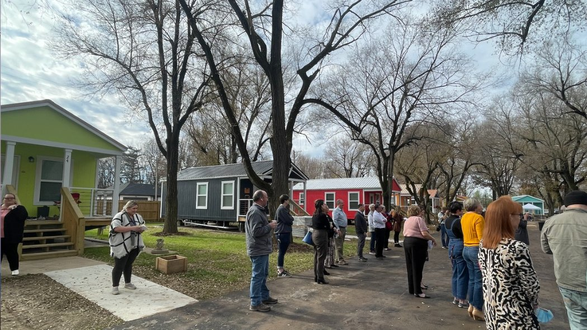

Timeline photos
HEY DAN! (@[100064805494040:2048:City of Akron, Ohio - Mayor's Office] )
Look at these losers over in Springfield, Missouri putting up their second tiny house village for homeless residents.
I mean, sure, they beat your city in every single economic signal available. They have 3 universities and their population is actually growing instead of shrinking like yours is.
But hey... at least you don't have these disgusting shelters for your homeless population. Your homeless population freezes unsheltered in the woods like the no-good losers they are, should, because all you do is steal their belongings and sweep their camps.
I'm so glad we have such a genius for mayor like you.